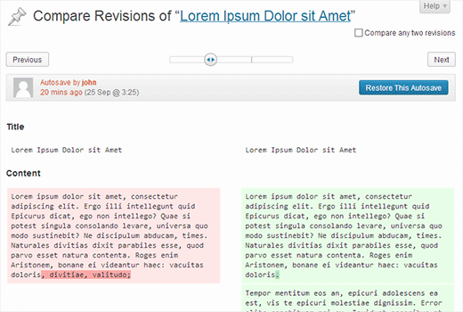

WordPress Customizations for Higher Education Users
Solving for a few common problems of higher education users
Yes, my desk is usually that clean. It's a compulsion.
Steve Ryan
Ira A. Fulton Schools of Engineering, Arizona State University
@SteveRyan_ASU
steve.ryan@asu.edu
Meet your users
Students
Faculty
Staff
Audience varies widely. Each has their own priorities.
Common Problems
- User have varying levels of expertise.
- Users potentially change with each semester.
- But they all require a basic, baseline access point to your site.
Building an awesome user experience
More work than you'd think.
But it's GOOD work, and not too complicated to make it happen.
The "Pages not Posts" problem
Users often have a need to edit specific pages within a more widely used site.
Challenge #1: Limit Access
Default "post editing" roles within WordPress:
| Capability | Super Admin | Admin | Editor | Author | Contributor |
|---|---|---|---|---|---|
| edit_others_posts | Y | Y | Y | ||
| delete_others_posts | Y | Y | Y | ||
| edit_published_posts | Y | Y | Y | Y | |
| publish_posts | Y | Y | Y | Y | |
| delete_published_posts | Y | Y | Y | Y | |
| edit_posts | Y | Y | Y | Y | Y |
| delete_posts | Y | Y | Y | Y | Y |
Challenge #1: Limit Access
Default "page editing" roles within WordPress:
| Capability | Super Admin | Admin | Editor | Author | Contributor |
|---|---|---|---|---|---|
| edit_others_pages | Y | Y | Y | ||
| delete_others_pages | Y | Y | Y | ||
| edit_published_pages | Y | Y | Y | ||
| publish_pages | Y | Y | Y | ||
| delete_published_pages | Y | Y | Y | ||
| edit_pages | Y | Y | Y | ||
| delete_pages | Y | Y | Y |
Solution: Define a few new User Roles
First, eliminate all references to pages from the default editor role. Then create something like:
| Capability | Page Editor | Page Author | Page Contributor |
|---|---|---|---|
| edit_others_pages | Y | ||
| delete_others_pages | Y | ||
| edit_published_pages | Y | Y | |
| publish_pages | Y | Y | |
| delete_published_pages | Y | Y | |
| edit_pages | Y | Y | Y |
| delete_pages | Y | Y | Y |
Great, but...
This creates an additional problem.
Need to create a way to assign multiple roles to a person since new roles define additional capabilities, not incremental.
How to implement?
Use a plugin
- User Role Editor
- Members
- Probably more...
Harder / Better(?)
- Enable multiple roles per user in admin.
- Define roles in code
Create a Custom User Role
Prep work: check out a good tutorial.
/* Add a custom user role to the site */
$new_role = add_role('page-author', 'Page Author', array(
'edit_other_pages' => false, // Can edit other users pages.
'delete_others_pages' => false, // Can delete other users pages.
'edit_published_pages' => true, // Can edit published pages.
'publish_pages' => true, // Can publish pages.
'delete_published_pages' => true, // Can delete published pages.
'edit_pages' => true, // Access to Pages and Add New (page).
'delete_pages' => true, // Can delete pages.
));
Include within your theme.
Better: build a plugin and keep it theme independent.
Multiple Roles per User
Two choices here.
- Adapt / include the code found within Multiple Roles Per User or something similar in your plugin.
- Or, just use the plugin in addition to what you are building.
Custom Post Types
With custom post types in general, remember to:
- Decide if they need a different set of permissions for user access and include those definitions when creating the CPT
- Or, map it to either the post or page permission structure you just created.
OK, what did that get me?
Before:
After:
But there's more work to do.
The "Just Show Me What's Mine" Problem
Now that you can, let's assign pages to specific people.
Question: How do I login?
Question: How can I edit my page?
Kind of a bad response...
... and the response I gave to someone yesterday.
- "Just go to
/wp-admin.phpand login." - From there, go to
/pagesor click the sidebar button - It's in there... someplace... probably... not seeing it?
- Hmm. Nevermind, I'll just send you a link.
Question: How do I login?
Little things: include a link to the login screen in the design of your product.
- Reduces the need to remember the "code word" for the login screen.
- Footer widget areas are great for this.
- Concerns about security?
- Check out Rename WP Login.
Question: Where can I edit my page?
Two way better conversations
- Enable WordPress Toolbar
- Shows Edit Page/Post button
- Navigate to the page, click the button
- Style the "edit" button so you can see it.
- Navigate to the page, find the button, click the button
/* Default Class Name */
.post-edit-link {
color:purple;
font-size:ginormous; // not real
blink:on; // kiding again
}
What your user is seeing:
Either all pages

...or no pages.
Pro Tip: Use User Switching to check.
Solution: Assign page authors
Pages HAVE authors by default. They're just not displayed in a normal WordPress page template.
Can still assign page authorship either in the post editor or the admin area.
Assign Authors, All Pages View
Use bulk edit function to add user to a page (or a post)
Assign Authors: Edit Page View
Be sure to reveal authors meta box in screen options.
Allow for multiple authors per page
Possible to do with code. But I like the
"stay classy, WordPress" option:
Co-Authors Plus Plugin
Bonus: Set default meta boxes
Filtering for default_hidden_meta_box() will allow you to set the initial post/page screen to the way that you want.
add_filter('default_hidden_meta_boxes','hide_meta_box',10,2);
function hide_meta_box($hidden, $screen) {
//make sure we are dealing with the correct screen
if ('page' == $screen->base) {
// show mostly everything by default. No -authordiv- here.
$hidden = array('postcustom', 'slugdiv', 'trackbacksdiv' );
// default meta boxes: = array('postexcerpt','slugdiv','postcustom','trackbacksdiv', 'commentstatusdiv', 'commentsdiv', 'authordiv', 'revisionsdiv');
}
return $hidden;
}
Source: developer.wordpress.org
Also possible to wrap this in a conditional for specific user role.
Bonus: Add Some Admin Columns
The "build it yourself" way is just plain messy.
Use a plugin.
Result: happy users editing pages.
Finally. But you're not quite done...
The "We're Only Human" Problem
We live and breathe WordPress.
- We know that core releases carry the names of jazz musicians.
- We believe that code is poetry.
- We read WP Tavern, Post Status and/or trac.wordpress.org
- We either aspire to or are actively contributing to WordPress in some way.
But, these guys may not.
Making an edit in real life.
Your users will always be juggling website editing with the "other work" that is also required.
- meetings
- teaching
- grading
- writing policy
- scheduling
- tutoring
- lab work
- counseling
- recruiting
- event planning
How can we really make it easier?
Doing some of the work outlined before this point goes a LONG way.
Prioritize the work, trust that it is GOOD work.
Then, ask "Can we make it even better?"
An Answer: Be the solution.
You are one of the best resources on your team.
Do some simple things:
- Be visible. Connect with others. Value their work.
- Set office hours, but keep an open door.
- Do the work when needed, but always be teaching.
Answer: The 10-Minute Rule
Premise: With moderate documentation and the right access, users should be able to understand how to complete most content updates in 10 minutes or less.
Answer: Build an "unbreakable" site
Premise: Make users aware of multiple options for understanding and undoing mistakes.
Environmental tools of the trade:
- Provide development or "sandbox" spaces.
- Be OK with restoring from a backup.
- (Backup Frequently.)
Answer: Mistakes are OK
Use Post / Page Revisions
Also: Enable the meta box by default just like the author box.
Answer: Audit Trail Plugins
Consider letting ALL users access a log of the changes made to a site over time.
Idea isn't to be punitive, but to understand who ELSE might be working in the same space.
Examples: Stream, Simple History
Answer: Support Dashboard Widget
One of the easiest things you'll ever build. Very effective.
add_action('wp_dashboard_setup', 'my_custom_dashboard_widgets');
function my_custom_dashboard_widgets() {
global $wp_meta_boxes;
wp_add_dashboard_widget('custom_help_widget', 'Theme Support', 'custom_dashboard_help');
}
function custom_dashboard_help() {
echo 'Include your support information. Include HTML in the markup.'
echo 'Also explain the 10 minute rule here.';
}
Conclusion: Engineering Happiness
Our goal is to build relationships based on trust which result in happy, passionate, loyal customers and colleagues. We do this through listening to their needs and guiding them to the fullest use of the products we offer. Requirements include the right mix of compassion, writing skills, and technical knowledge to get the job done.
-- Job description from Automattic